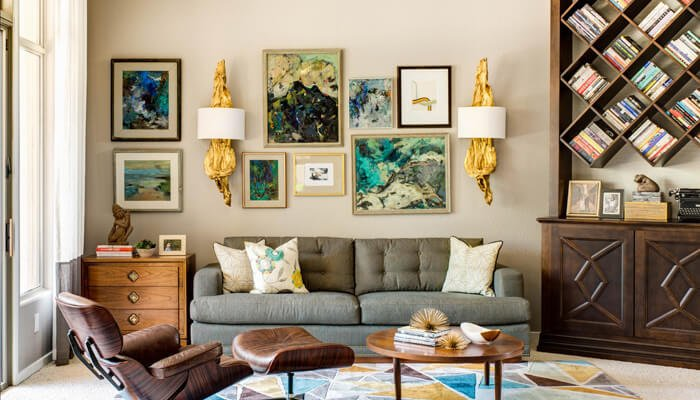

Stil
eclectic
Foarte permisiv și greu de definit, stilul eclectic dă voie imaginației să se dezlănțuie, amestecând bunul-simț cu capriciile, unitatea cu haosul, tradiționalul cu modernul. Eclectismul în amenajările interioare depășește granițele convenționalului, îmbinând elemente eterogene într-o manieră personală și încrezătoare. Stilul eclectic nu înseamnă dezordine, ci coeziune între epoci, stiluri, forme, culori, texturi și imprimeuri. O încăpere amenajata în stil eclectic reunește ceea ce este descoperit cu ceea ce este proiectat, încurajând originalitatea și libertatea de expresie.
Daca nu te regăsești într-un singur stereotip, nu ești atras în mod special de niciunul dintre stilurile populare de design interior, precum cel rustic sau contemporan, și daca nu te temi sa încalci regulile, stilul eclectic este soluția ideală pentru amenajarea casei tale. Totuși, asta nu înseamnă că vei alătura la nimereală tot felul de obiecte de mobilier și decorațiuni, ci vei încerca să le găsești pe acelea care, deși provin din stiluri diferite, reușesc sa spună impreună o poveste.
|  |
●Cum să-ți amenajezi casa în stil eclectic. Câteva principii
E adevărat ca la baza stilului eclectic nu stau niște reguli stricte, dar daca nu ar exista măcar câteva principii generale după care să ne ghidam, atunci am vorbi despre o simplă improvizație. Ca să cream o estetică unică, armonioasă și cu un impact puternic, ne putem ghida după urmatoarele elemente cheie: